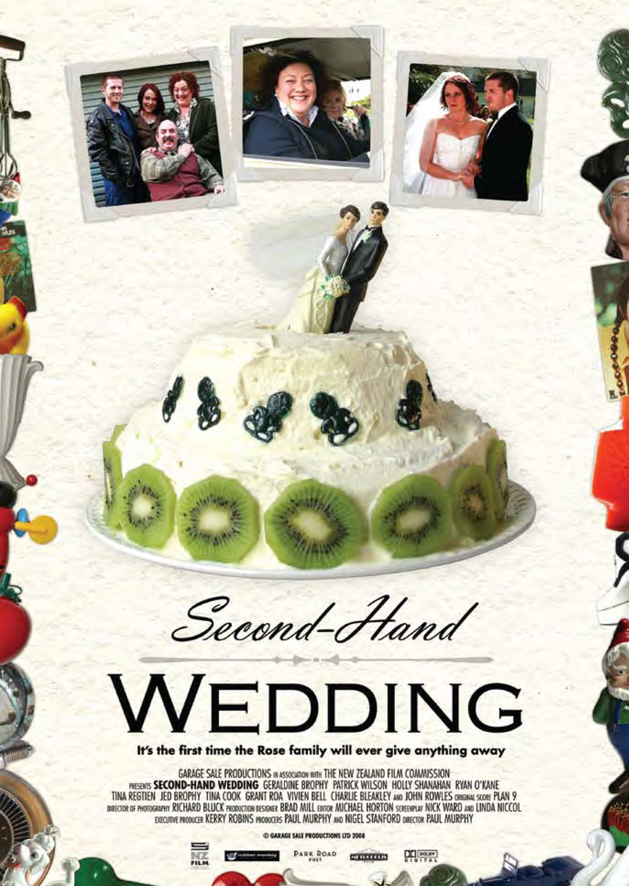
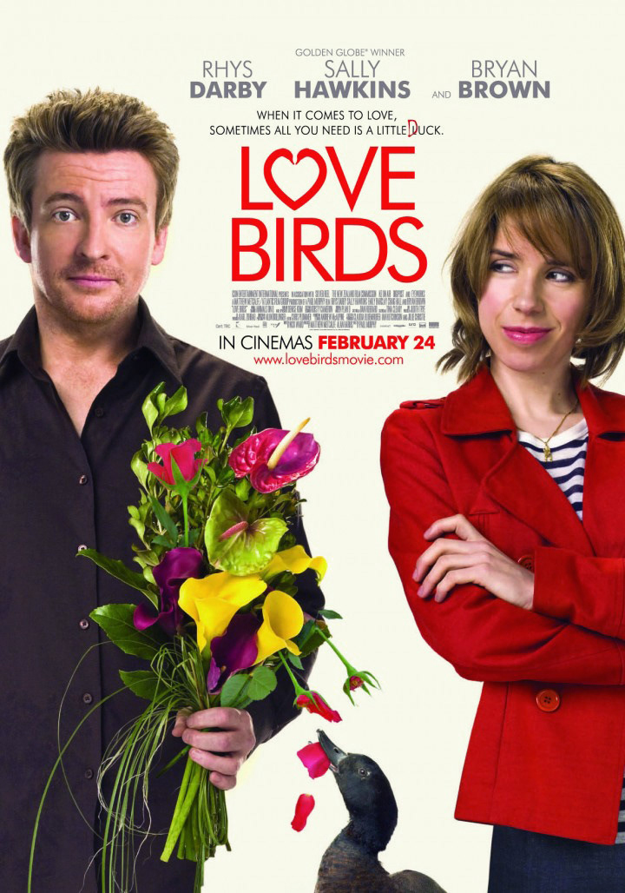
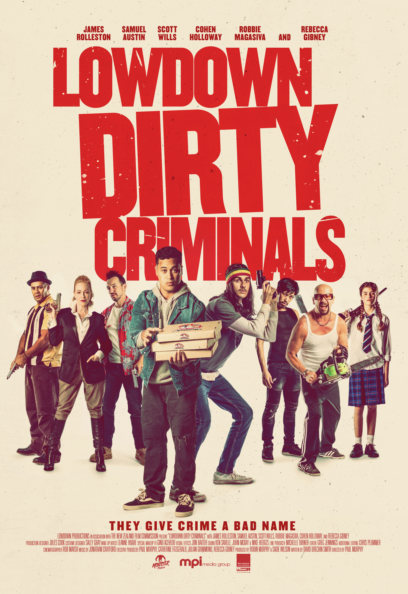

New Zealand Feature Film Director

2007
A family rom-com shot on a $200k budget that ran 17 weeks in cinemas, reaching 7th on the all-time NZ box office.
Best Female Lead · Best Supporting Actress
Qantas NZ Film Awards 2008

2011
Starring Rhys Darby and Sally Hawkins. Despite a national disaster impacting its release, it became the 3rd highest-grossing New Zealand film of the year.
Best Director, Foreign Film (Audience Award)
Golden Rooster & Hundred Flowers Festival, China

2020
Starring James Rolleston, Samuel Austin and Rebecca Gibney. Two small-time crooks accidentally kill the wrong man and find themselves hunted by Wellington's most feared crime boss.
Available on Apple TV
A selection of work by Paul Murphy